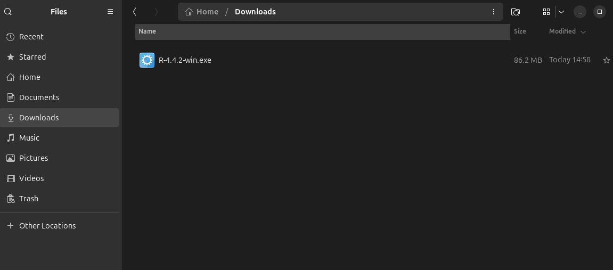
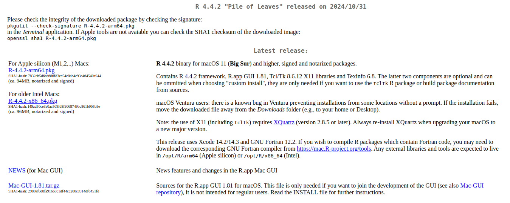
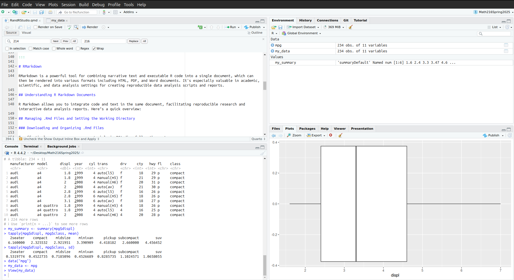
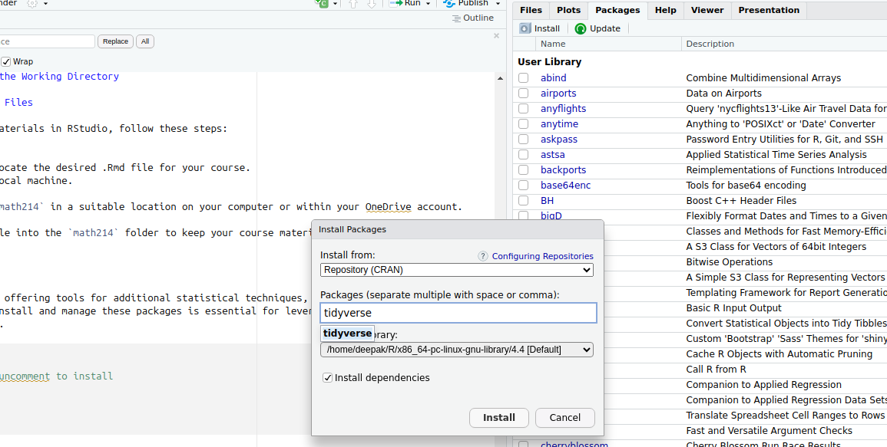
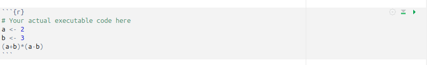
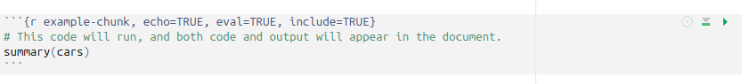
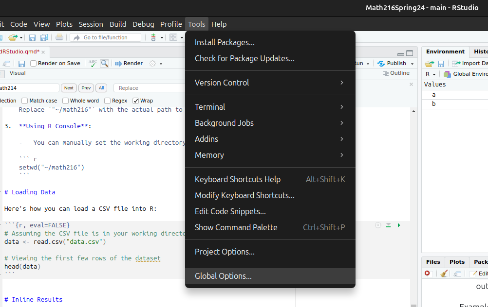

Setting Up R and RStudio
Introduction
This lab tutorial will guide you through installing R and RStudio on your computer, managing packages, and loading data into R. This setup is essential for performing all kinds of data analysis tasks in R.
What are R and RStudio?
R is a programming language designed for statistical computing and graphics, widely used in data analysis, statistical modeling, and research. RStudio is an integrated development environment (IDE) that facilitates the use of R by providing a user-friendly interface for scripting, debugging, and visualization.
Importance in Statistics Education
R and RStudio are critical tools in statistics education for several reasons:
Statistical Analysis: They provide a robust environment for performing and learning a wide range of statistical analyses.
Reproducible Research: Tools like knitr and R Markdown in RStudio promote reproducibility, allowing for seamless integration of analysis and reporting.
Interactive Learning: The interactive nature of RStudio helps in visualizing data and statistical concepts more effectively.
Installing R and RStudio
On Windows
-
Download R:
- Visit CRAN and download the latest version of R for Windows.
- Run the downloaded
.exefile and follow the installation instructions.


-
Download RStudio:
- Go to the RStudio Download page and download the free version of RStudio Desktop for Windows.
- Install it by running the downloaded
.exefile.


On Mac
-
Download R:
- Navigate to CRAN and choose the version for macOS.
- Open the downloaded
.pkgfile to start the installation.


-
Download RStudio:
- Visit RStudio Download page and select RStudio for macOS.
- Open the downloaded
.dmgfile and drag RStudio to your Applications folder.

RMarkdown
RMarkdown is a powerful tool for combining narrative text and executable R code into a single document, which can then be rendered into various formats including HTML, PDF, and Word documents. It’s especially valuable in academic, scientific, and data analysis settings for creating reproducible data analysis scripts and reports.

RMarkdown Interface Components
RStudio’s interface for working with RMarkdown documents contains four key panes:
Source Editor (Left Pane)
Primary workspace for writing.Rmdfiles with integrated code chunks and narrative text. Features syntax highlighting, chunk controls (run individual code blocks), and document structure navigation.-
Environment/History (Top-Right Pane)
-
Environment: Lists active datasets, variables, and functions
-
History: Tracks all executed commands
-
Connections: Manages database links (when used)
- Git: Version control integration (when configured)
-
Environment: Lists active datasets, variables, and functions
-
Console/Terminal (Bottom-Left Pane)
-
Console: Direct R code execution environment showing raw output
-
Terminal: System-level command line access
- Background Jobs: Monitor long-running processes
-
Console: Direct R code execution environment showing raw output
-
Viewer/Help (Bottom-Right Pane)
-
Viewer: Preview rendered documents (HTML/PDF/Word)
-
Help: Access function documentation
-
Files: Navigate project directory structure
-
Plots: Display graphical output
- Packages: Manage installed R packages
-
Viewer: Preview rendered documents (HTML/PDF/Word)
Understanding R Markdown Documents
R Markdown allows you to integrate code and text in the same document, facilitating reproducible research and interactive data analysis reports. Here’s a quick overview:
Managing .Rmd Files and Setting the Working Directory
Downloading and Organizing .Rmd Files
To effectively manage your course materials in RStudio, follow these steps:
-
Download .Rmd File:
- Navigate to MyClasses and locate the desired .Rmd file for your course.
- Download the file to your local machine.
-
Create a Course Folder:
- Create a new folder named
math493in a suitable location on your computer or within your OneDrive account.
- Create a new folder named
-
Organize Files:
- Move the downloaded .Rmd file into the
math493folder to keep your course materials organized.
- Move the downloaded .Rmd file into the
Installing Packages
R packages extend R’s capabilities, offering tools for additional statistical techniques, data manipulation, and graphical outputs. Knowing how to install and manage these packages is essential for leveraging R’s full potential in practical and academic applications.


Text Portions
Text in R Markdown is written using standard markdown syntax. This allows you to add headers, lists, links, and other styling features to create dynamic reports.
Text Formatting in R Markdown
Markdown is a lightweight markup language that allows you to add formatting elements using plain text. Here’s how you can use different Markdown syntax to format text within your R Markdown documents.
Headers
Create headers by prefixing the text with one or more hash symbols (#). The number of # symbols before the text determines the level of the header.
# Header 1
## Header 2
### Header 3Lists
You can create bulleted or numbered lists:
- Unordered Lists (bullets):
- Item 1
- Item 2
- Subitem 1
- Subitem 2- Ordered Lists:
1. First item
2. Second item
1. Subitem 1
2. Subitem 2Links
Include hyperlinks using the format [link text](URL):
[Visit Canvas](https://salisbury.instructure.com/courses/71470)Emphasis
Italicize or bold text using asterisks or underscores:
-
Italic:
*Italic*or_Italic_ -
Bold:
**Bold**or__Bold__
Images
Embed images using the format :
Blockquotes
Create blockquotes with >:
> This is a blockquote.Code
Display inline code with backticks and code blocks with triple backticks:
- Inline code:
`code` - Code block:

[1] -5Horizontal Rules
Insert a horizontal line with three or more hyphens:
---Combining Markdown with R Code
Markdown can be interleaved with executable R code chunks:
# Calculate the sum of numbers from 1 to 10
sum(1:10)[1] 55R Code Chunk Options
Before diving into data loading, let’s understand important R chunk options:
-
eval: Useeval=FALSEto prevent code from running but still display it. -
echo: Withecho=FALSE, the code is run but not displayed in the document. -
include:include=FALSEruns the code and hides both the code and output from the final output.
Example to demonstrate:

# This code will run, and both code and output will appear in the document.
summary(cars) speed dist
Min. : 4.0 Min. : 2.00
1st Qu.:12.0 1st Qu.: 26.00
Median :15.0 Median : 36.00
Mean :15.4 Mean : 42.98
3rd Qu.:19.0 3rd Qu.: 56.00
Max. :25.0 Max. :120.00 Setting the Working Directory
It’s crucial to set the working directory in R to the folder where your course files are stored. This can be done in several ways:
-
Using RStudio:
- In RStudio, you can set the working directory through the menu by navigating to
Session > Set Working Directory > Choose Directory...and selecting yourmath493folder.
- In RStudio, you can set the working directory through the menu by navigating to
-
Using R Script:
- You can also set the working directory directly in an R script using the
setwd()function. Place the following line of code at the beginning of your script:
setwd("~/math493")Replace
"~/math493"with the actual path to your course folder. - You can also set the working directory directly in an R script using the
-
Using R Console:
- You can manually set the working directory in the R console with the same command:
setwd("~/math493")
Loading Data
Here’s how you can load a CSV file into R:
Disable Inline Output
To prevent plots/results from appearing inline:
- In RStudio: Tools → Global Options → R Markdown
- Uncheck: “Show output inline for all R Markdown documents”
This forces output to render in Viewer pane instead of inline.
(Changes require R session restart)
